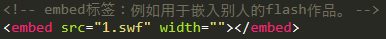

1.video：支持的三种格式：Ogg，MPEG4，WebM。
Src属性：要播放视频的地址。
Width属性：宽度。
Height属性：高度。
Autoplay属性：自动播放。
Loop属性：循环播放。
Controls属性：向用户展示控件，如播放按钮。
Poster属性：视频播放前的预览图片。
Preload属性：视频在页面加载时是否进行加载，并预备播放，一般是默认值。
2. audio：支持的三种格式：Ogg，MP3，Wav。
3.source解决浏览器兼容问题：原理就是指定多个文件来源。
注意：如果使用了source元素，就不能使用src元素。
4.embed：定义嵌入的内容，比如插件。
Object：定义一个嵌入的对象，用于包含对象。比如：图像、音频、视频、flash。
